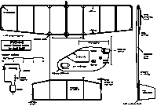
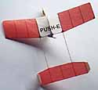
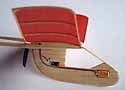
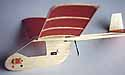

|
Jack recently sent me a care package including photos and plans of the Push-E, one of his latest models. I couldn't resist redrawing the plans and putting together the page you see here.
A complete construction article is below. Click this preview to download the full sized plan. There is a scale on the plan for proper sizing. If you have trouble scaling the plan to size, a copy machine will help. - Thayer |  |
|
Knight and Pridham recently introduced the KP-00 motor to their already impressive line of motors and other modelling goodies. If we thought that the KP-01 was a small motor/gear unit, the KP-00 was a real surprise. It is an incredibly small, yet powerful, unit. The KP-00 is available in two forms, as a tiny motor/gear unit, and as a simple direct drive motor. Each comes complete with a novel adjustable pitch propeller. The motor/gear version can power some fairly large models, both indoor and outdoor. One of my club mates put one of these geared units on a truly huge (40" span, 6" chord) mylar covered 35 gram indoor model, powered by two 50 mAh nicad cells. Looking like a Pennyplane on steroids it floats along in majestic serenity, at less than walking speed.
 The model described here, however, is at the other end of the scale. PUSH-E is powered by just one 50 mAh nicad, and uses the tiny 3.6 gram KP-00 motor in direct drive form. Ready to fly, the model weighs around 12 grams. Several of our club members have built their own versions of the layout, and to watch these models buzzing around the sports hall where we fly has provided much enjoyment for, and prompted much interest from, those who have seen them. (click any photo for larger views) |
|
 There is a lot of hardware to be carried, in the form of motor, prop, battery, switch and wiring, and as with all electric powered models, and especially indoor ones, weight-watching becomes paramount. For PUSH- E this irreducible mass totals some 9 grams or so, and considering that the motor, on one cell, can only fly a model of this size which weighs no more than about 13 grams, there is not a lot left for airframe. Very careful attention to the selection of materials is most important, and I will dwell more on that aspect than on a stick-by-stick building instruction. The pod should be made from the lightest C-grain 1/8" sheet you can find. I used 4-1/2 # stock. Cut the holes for the motor, switch and speed control, but leave the battery hole until after the model is assembled. The "canopy" area is just a hole in the pod, but in flight it appears realistic. For the wing, the 1/16" square LE and TE can be 12 # stock for the centre section, but should be lighter 8-10 # stock for the tip sections. Ribs are 6- 8 # C-grain stock, and the gussets should be very light material (4-5 #). The tailplane is from 6-8 # wood. The tailbooms are made from firm, but light, 1/16 sheet (not more than 8-10 # wood). They are 1/4" deep at the wing TE, and taper to 1/16" square at the wing LE and the tailplane TE. The fins are made from very light (4-5 #) 1/32" C-grain wood. If you have to use weightier stock, sand the sheet down to around 1/64" thickness.
To guide your construction, these are the approximate weights of the finished components of the prototype model: |
| Total Model Weight - 12.2 grams | |||
|---|---|---|---|
| Total Drive Train | 9.1 | Total Airframe | 3.1 |
| Motor | 3.6 | Pod | 1.1 |
| Prop | 0.6 | Wing | 1.0 |
| Switch | 0.5 | Tailbooms | 0.4 |
| Speed control | 0.4 | Tailplane | 0.4 |
| Battery | 3.6 | Fins | 0.2 |
| Wiring | 0.4 | ||
|
The wing and tailplane are covered, on the top side only, with light Japanese tissue. Do not dope, nor water shrink the tissue, to avoid warps. If you like a smooth finish, and are very careful, a light steaming over a boiling kettle can be used to partially shrink the covering, but be careful. If in doubt, don't do it. Assemble the model, with the exception of the single on-board battery cell. It is added after the initial glide tests. I glued the motor, switch and speed control to the pod using thick cyano. Avoid the thin variety, to prevent gluing up the insides of these components.
The KP-00 motor can be obtained directly from Knight and Pridham, or also from FliteHook or SAMS in the UK. Kenway carries them in the US. In Canada try Skyhooks and Rigging. I used a 3-1/8" Union U-80 prop, from Kenway (also available from FliteHook), cut down to 2-7/8" diameter to reduce the current draw. The 3-3/8" prop that is supplied with the motor could be used also, but it should be cut down as well. If it is used, the blades should be twisted to a pusher position, and the pitch should be set quite low. The speed control is a miniature 10 ohm variable resistor, available from Kenway. Use of a speed control is not absolutely essential, but it will keep you out of the rafters on long flights! The tiny slide switch is an NRS2, from E.M.P.S., although any really small switch could be used. Use the smallest size conductors you can get for the wiring. The motor only draws around 0.25 amps, so light wiring is adequate. If you're having trouble, E.M.P.S. has some nice 32 gauge teflon covered conductors that are suitable. The wiring can be neatly cyanoed to the pod to keep it tidy. Check that the motor is wired up the right way round for pusher operation. The motor has a small white dot adjacent to one terminal. For this model, this dot indicates the positive terminal. All wiring connections are soldered. |
|
Trimming the model starts with the glide. Temporarily tape the battery to the nose of the model and test glide to find its final location, which may vary from that shown on the plan due to variations in component weight. Like most indoor models, this one will land before the power is completely exhausted, coming down in a powered glide. It is not necessary to be too fussy in setting the battery location for the ultimate in power-off glide, but try to avoid excessive diving or stalling when locating the battery. When you're happy, cut the battery hole, complete the wiring, and glue the cell in position. The prototype balanced at about the 50% root chord location at this stage.  For charging the nicad cell I soldered short pieces of stiff wire to the battery terminals. To these I clip the colour-coded charging leads, using miniature alligator clips. A "pocket charger" can be made using from two to four larger nicads. If more than two are used, an in-line resistor must be used in the charging leads, to limit the charge current to no more than about three quarters of an amp. I use four 500 mAh nicads, with a 4.7 ohm, 3 watt resistor in the positive lead. Knight and Pridham have a very neat four cell pocket charger, originally designed for their three cell KP-01 and KP-02 motor/gear units. This could also be used, with a current limiting resistor added. To fully charge the on-board cell, using a charger with a current output limited to about 0.75 amp, would take at least three minutes. For the initial flight tests only partial charges are used, and the speed control can be set to its maximum (fully clockwise) position, which gives maximum power for the charge available. Start with a charge of about 15 seconds (at 0.75 A), and use the first few flights to adjust the turn circle diameter and flight attitude. The model can easily be adjusted for circles of 15 to 30 feet diameter, depending on space available at your flying site. Minor CG. adjustments (small bits of modelling clay at the nose or tail) may be necessary in conjunction with fin tab alterations. When you're happy with the model's trim, start to increase the charge duration, in steps of only 5 seconds or so. As longer charges are used the high power part of the flight increases in duration, and the model will climb higher before settling down to its cruise. Should you be nearing the ceiling of your site, the altitude can be controlled by turning down the speed controller in small amounts. The prototype required a change from the initial 12 o'clock position of the screwdriver slot on the controller to about the 10 o'clock position as the charge time began to exceed 1 minute. After that it's just a matter of going for the maximum time you can, by using charges up to the cell's maximum capacity, or just having fun with shorter charges. Flights of over three minutes are within the model's capability. Be careful with long charges, though, and stop charging if the cell ever becomes more than very warm to the touch. Above all, enjoy your PUSH-E! |
Knight and Pridham Engineering Limited, Castle Road, Rowlands Castle, Hampshire PO9 6AS UK
FliteHook, 42 Player's Crescent, Totton, Southampton, Hampshire SO40 9AZ UK
Kenway Micro-Flight, P.O. Box 889, Hackettstown, NJ 07840 USA
E.M.P.S. Inc., P.O. Box 134, Robesonia, PA 19551 USA
Skyhooks and Rigging, 2206 Towne Blvd., Oakville, Ontario L8H 5H4 Canada
Return to
Plans Page | FF Gallery
Copyright 1999, Thayer Syme. All rights reserved